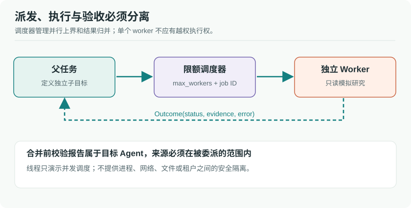
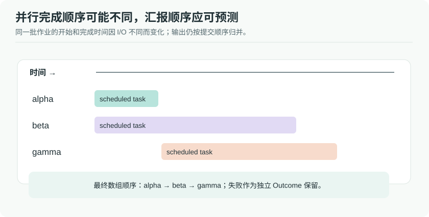

实现 Sub-Agent 调度：并发、归并与失败回收
使用不执行真实模型或 Shell 的可测试调度器，理解有限并发、结果顺序、异常归并和任务隔离的实际工程边界。
把子任务并发化的真正前提
让两个 Agent 同时修改仓库，通常不会让工作自然加速：它们可能各自读取旧文件状态、覆盖对方补丁，或用不同验收标准宣布完成。安全的第一步是只选择相互独立的只读任务演示调度，如分析两个不同测试文件。
本章构建的 Scheduler 接受一组已经定义好的委派契约，将工作交给限制数量的 mock worker，收集返回值并验证归属。它没有模型 API、Shell 或工作区写入能力。

接口必须隔离输入与输出
一个请求必须明确子目标、允许的引用、工具范围、最大轮次。子代理返回的 Finding 必须拥有对应代理标识，并为结论附上证据来源与未解决事项。错误不能把原始异常栈、私密路径和凭证直接注入公共报告。
@dataclass(frozen=True)
class Outcome:
agent: str
status: str # ok 或 error
report: Finding | None
reason: str = ""
# 不在委派引用中的 sources → error outcome
# worker 抛异常 → error outcome
# 不因 worker 错误就自动放宽权限并行输出顺序与执行完成顺序不是一回事
两个 worker 可能以不同顺序结束，但任务列表与最终汇报最好有稳定顺序，便于重放测试与复查差异。当前示例通过 ThreadPoolExecutor 提交最多 8 个任务，最多同时运行 4 个 worker，并按提交顺序收集 Future.result()。

这里没有为每个执行任务设置真正的硬超时，也没有强制停止线程。生产中需要线程/进程取消、资源清理、预算、幂等写入和跨 worker 锁。
使用标准库实现可测的调度
代码位于 subagent_scheduler.py。它复用第 12 章的 Delegation 与 Finding，通过单一工作函数返回稳定的 Outcome。
jobs = (
delegate(name="alpha", goal="Review A", refs=("a.py",),
parent_allowed=frozenset({"Read"}),
requested_tools=frozenset({"Read"}), budget=3),
delegate(name="beta", goal="Review B", refs=("b.py",),
parent_allowed=frozenset({"Read"}),
requested_tools=frozenset({"Read"}), budget=3),
)
outcomes = run_batch(jobs, worker=inspect_mock, max_workers=2)
assert [o.agent for o in outcomes] == ["alpha", "beta"]inspect_mock 是调用方提供的无副作用函数。真实模型 worker 必须另设授权和隔离层，不能仅将 Python 线程的模型调用当成安全边界。
三类最常见的协作失误
| 情形 | 后果 | 控制策略 |
|---|---|---|
| 两个 Agent 修改相同文件 | 覆盖与丢失更新 | 工作树隔离、资源锁、显式合并 |
| 子代理抛异常 | 主任务误判完成 | Outcome 标记 error，保留可审计失败原因 |
| 外部结果引用不明 | 无法核验结论，可能混入敏感信息 | 来源校验、最小化和必要时人工复核 |
线程并不是安全沙箱
所有线程共享同一个 Python 进程与 OS 身份。本例只研究调度、稳定汇报和异常路径，绝不能用于运行未受信任的用户代码。
哪些能力属于官方公开 Subagents
Claude Code 文档支持自定义子代理、前后台任务、工具限制、技能预载、持久记忆等，并讨论与 Fork 的差异。配置项可能随版本改变，因此不应把这里的 ThreadPoolExecutor、队列顺序或最大 worker 限额误写成 Claude Code 的真实内部实现。
子代理结果仍要经过上层任务的验收。真正自动化的软件修改至少需有权限策略、代码 diff、测试产物以及可回滚的交付流程。
练习：模拟失败与输入顺序
执行 python3 -m unittest discover -s examples -p 'test_*.py'，运行成功、异常、非法来源、重复 Agent 名称和超额并发测试。
参考资料与事实边界
- Claude Code：Subagents — 前后台代理与官方能力限制
- Claude Code：Permission rules — 子代理不能自动绕过权限
- Claude Code：Agent SDK Subagents — 公开 SDK 接口和代理配置
线程调度和 Mock worker 是教学示范，不代表 Claude Code 内部代理调度实现，也不提供进程安全隔离。